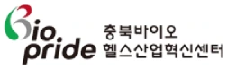
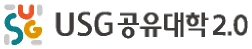

AI TransLive
실시간 자막과 통역
강의를 듣는 동안 자막과 번역이 함께 흐릅니다.
NewXN Quiz · GradeFlow 시범운영 시작
강의 설계부터 학습, 평가, 캠퍼스 운영까지. 400여 대학과 기관이 Xinics 하나로 수업을 운영합니다.


One platform
네 단계의 데이터가 이어져서, 한 단계의 결과가 다음 단계를 더 똑똑하게 만듭니다.
화면은 이해를 돕기 위한 예시입니다.
Products
LMS 안에서 바로 열리고, 학교의 자료를 근거로 동작합니다.
AI TransLive
강의를 듣는 동안 자막과 번역이 함께 흐릅니다.
AI Commons
슬라이드, 스크립트, 영상, 퀴즈를 한 번에 초안으로.
TrustLock
이상 행동을 탐지해 부정행위를 막습니다.
LearningX AI 플랫폼
모델, 권한, 사용량을 학교가 직접 관리합니다.
LearningHUB
모든 과목의 할 일과 진도, AI 검색을 하나의 학습 홈에서.
화면은 이해를 돕기 위한 예시입니다.
Services
강의실과 서버까지 함께 만들고 운영합니다.
Zoom Education 공식 파트너
계약부터 운영까지, 예약·실행·출결을 LMS에서 한 번에.
교육 시설 구축
셀프 스튜디오, 자동녹화 강의실, LED 컨퍼런스룸 설계·구축.
클라우드 매니지드 서비스
공공·민간 클라우드에서 웹과 DB의 보안과 성능을 관리합니다.
About Xinics
20년 이상 400여 대학·기관과 함께한 교육 혁신 파트너